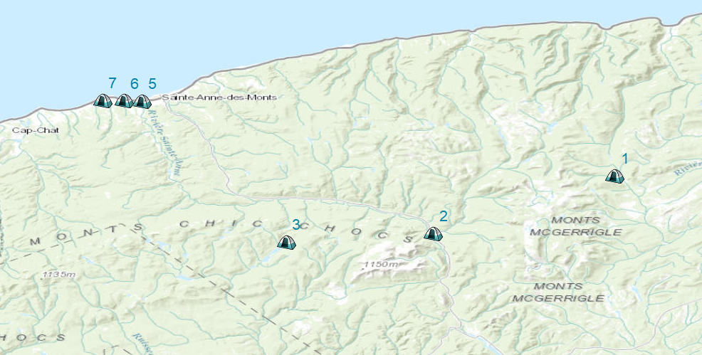

Carte des sites de camping

-
Camping du Mont Jacques-Cartier
1Z0, Chemin de Ceinture des Monts McGerrigle, Rivière-à-Claude
Plus d'information
-
Camping de la rivière
1981 2E4, Route du Parc, Sainte-Anne-des-Monts
Plus d'information
-
Camping du Lac Cascapédia
Mont-Albert
Plus d'information
-
Camping Ancre Jaune
2 Rue Simard, Sainte-Anne-des-Monts
Plus d'information
-
Camping O'P'TIT DES MONTS
748 Boulevard Sainte Anne O, Sainte-Anne-des-Monts
Plus d'information
-
Camping du Rivage
500 1re Avenue O, Sainte-Anne-des-Monts
Plus d'information